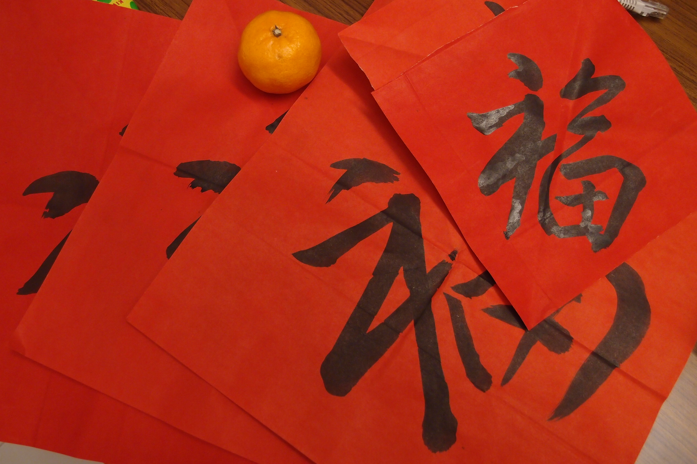
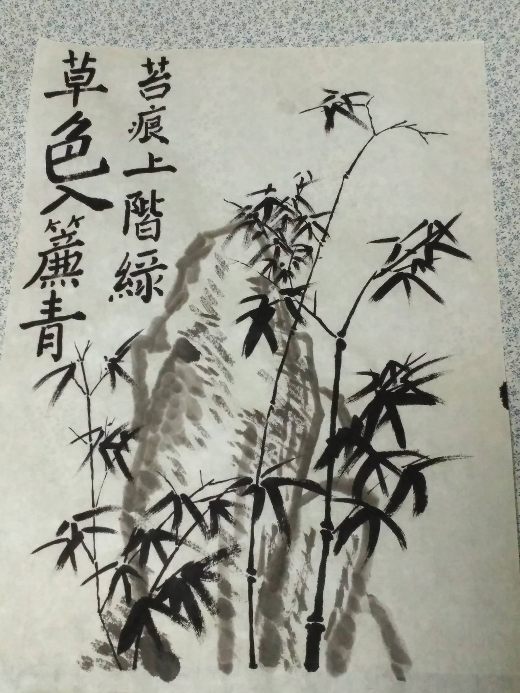
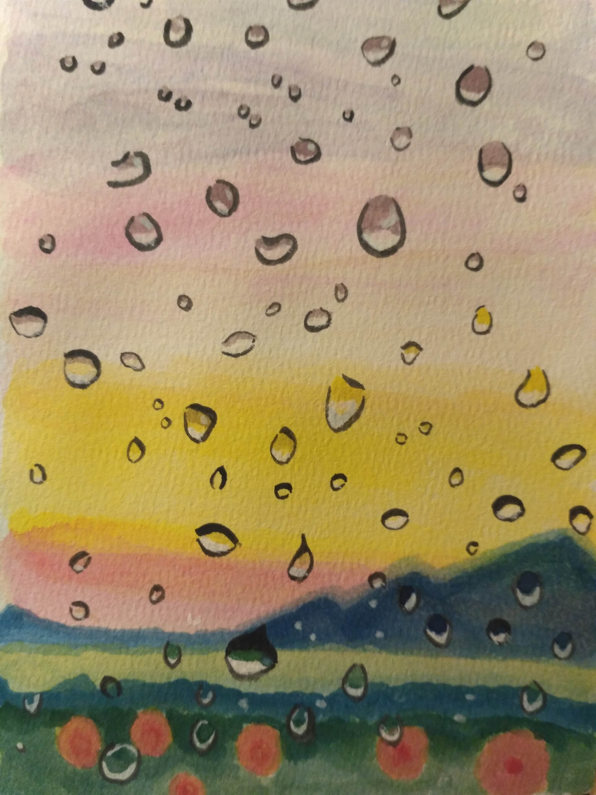
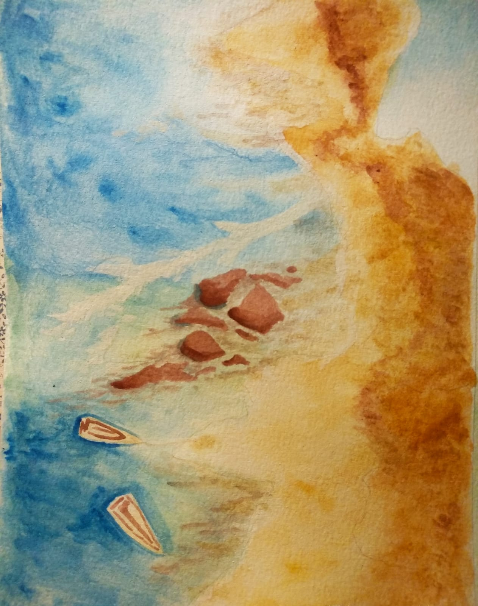
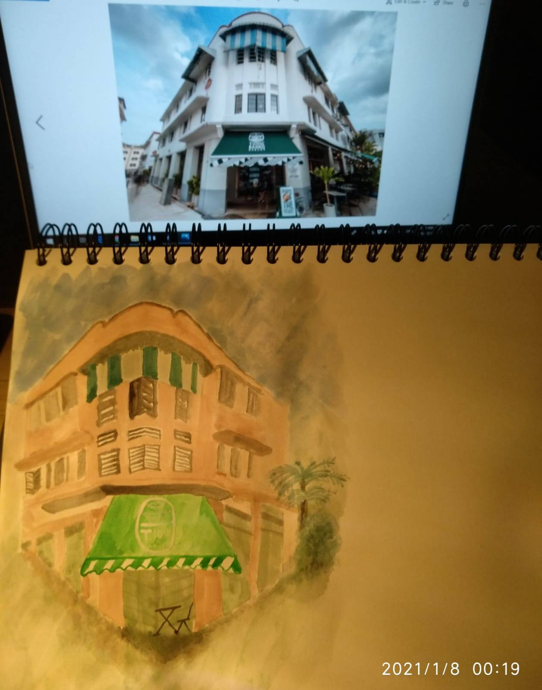
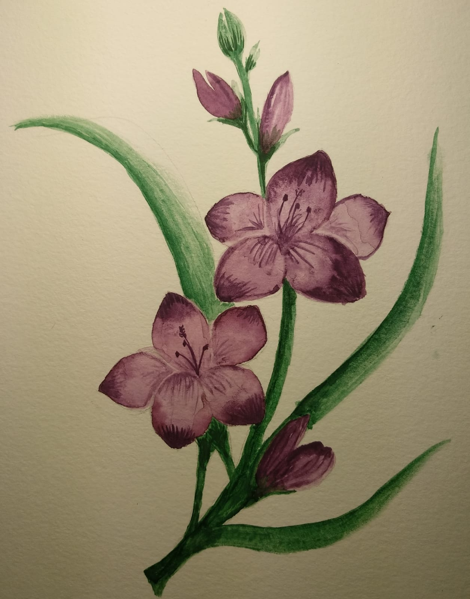
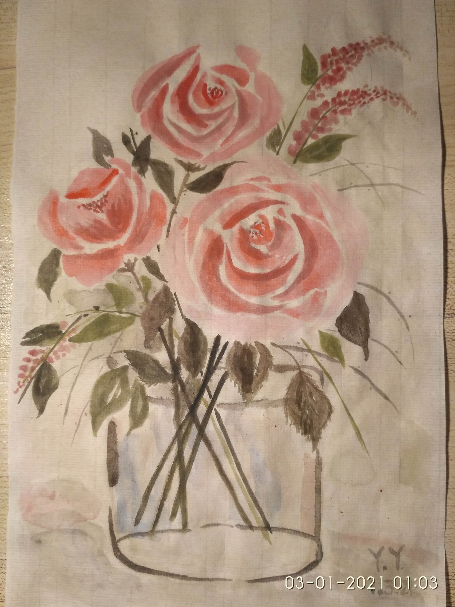
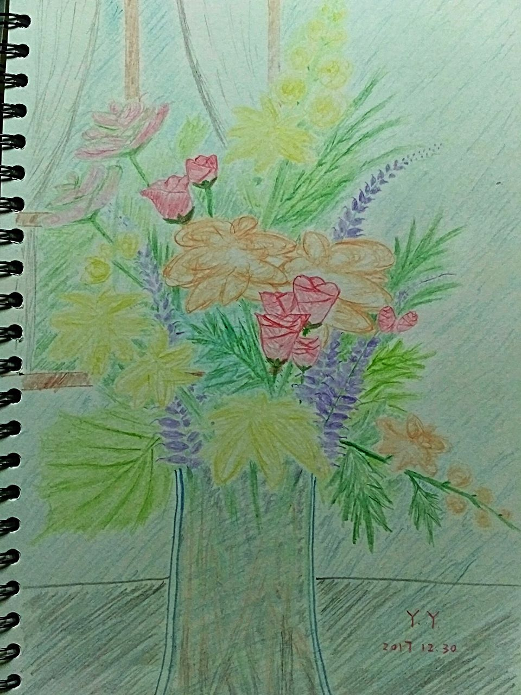
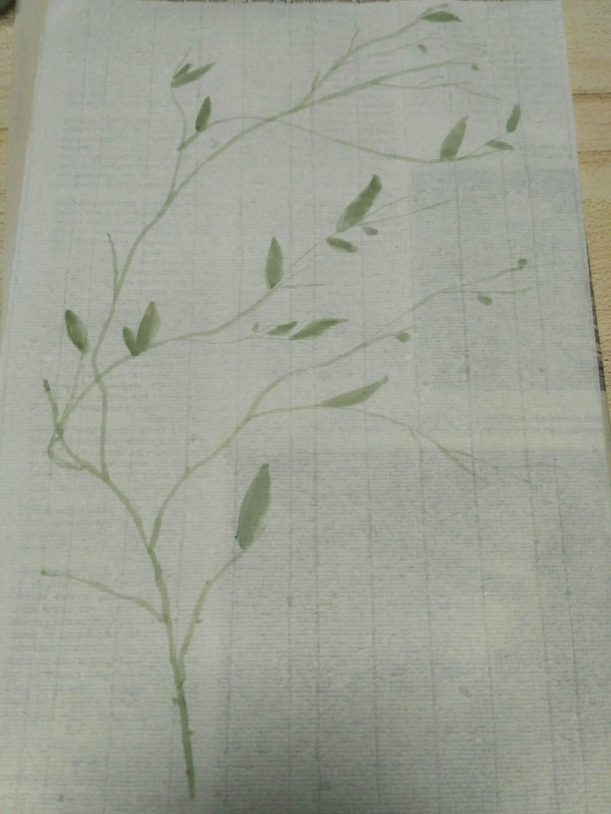

UX Research Portfolio
Lead UX Researcher · Singapore
Translating complex human behaviour into measurable business outcomes, across healthcare, logistics, e-commerce, and AI products in Southeast Asia, China, Japan, and India.
View Case Studies →I am a mixed-methods researcher with deep expertise in both qualitative inquiry and quantitative analytics. My work bridges the gap between raw user data and business strategy — producing insights that are not just intellectually rigorous, but operationally actionable.
With over a decade of hands-on experience across Southeast Asia, China, Japan, and India, I specialise in leading complex, end-to-end research programmes for digital products and offline services. I have a strong track record of building and mentoring research teams, managing personnel, and driving workforce development — including transitioning teams from reactive, ad-hoc models to proactive, insight-driven cultures. I collaborate closely with cross-functional partners across product, design, engineering, data analytics, and marketing, and I am experienced in managing vendor relationships and aligning diverse stakeholders around research-informed decisions.
My interdisciplinary background in sociology, econometrics, and ethnography gives me an unusually broad toolkit — from longitudinal survey modelling and log-data analytics to contextual inquiry and focus group facilitation — equipping me to translate ambiguous business questions into well-scoped research programmes that deliver clear, actionable, and measurable outcomes.
The product faced low new user conversion on day one and high attrition at day 7, 15, and 30 after registration. The causes behind both patterns were unknown.
The product team had no visibility into why new users were failing to complete registration, nor why retained users were dropping off at consistent intervals. Without understanding the underlying causes, the team could not prioritise fixes or determine which features were actually driving engagement.
I designed a mixed-methods study to address two questions in parallel: what product bottlenecks and user pain points were causing day-one drop-off during registration, and what potential growth opportunities could reduce attrition at days 7, 15, and 30.
Log data analytics identified the key behavioural metrics needed to track user progression and pinpointed where users were exiting the registration funnel. I produced a product roadmap visualising the specific design bottlenecks driving drop-out, backed by supporting statistics.
Combined focus group interviews and log data analysis also revealed that a key feature for user engagement and retention was absent from the product. I recommended the product team add this feature and surface it prominently on the landing page.
Based on the findings, I provided concrete recommendations to streamline the product design, retaining and highlighting the features with high conversion rates.
The product design revamp driven by this research significantly increased new user successful registration rates and overall user retention across the platform.
A two-phase mixed-methods study to rethink how merchants are understood and to translate those insights directly into product strategy and revenue growth across multiple SEA markets.
Existing merchant archetypes were defined purely by sales channel and volume, with no consistent definitions for small, medium, or large merchants. These blunt categories offered no insight into user needs, pain points, or growth trajectories, and provided no foundation for improving user experience or identifying new business opportunities.
I designed and led 25 semi-structured interviews across Singapore, Malaysia, Thailand, Vietnam, and Indonesia, using random sampling combined with manual screening. I navigated cross-country recruitment, language barriers, varying business contexts, and significant stakeholder management challenges under tight timelines.
Analysis revealed 3 behaviour-based merchant archetypes mapped along a business maturity journey. Each archetype carried distinct user needs, growth motivations, and pain points that the volume-based model had completely obscured.
A follow-on study for Product X found that the correct target user group was Type II merchants, not the Type III merchants the product team had assumed. I identified key behavioural metrics from the interview data to operationalise each archetype within the company's database, and used two complementary analytical methods to generate a validated lead list of Type II merchants, enabling the team to realign their GTM strategy.
The research led to a full product feature revamp for Product X, aligning features and GTM strategy with research-validated merchant archetypes. This drove a 408% to 1,851% increase in sales across different SEA markets.
Evaluating the effectiveness of home personal care services delivered to seniors living in rental flats, served by care teams of social workers and healthcare aides.
The care programme delivered three categories of service to low-income elderly residents: physical and cognitive care (medical and nursing support); personal care (assistance with daily living activities and medical escort services); and social care (financial support and community connection). The research goal was to evaluate how effectively these services were meeting users' needs.
The initial research plan included a survey and semi-structured interviews with service users, supplemented by contextual inquiry. After reviewing it, I noticed it carried significant methodological risks. Elderly recipients in a care relationship are particularly susceptible to reporting bias and social desirability bias: they may underreport problems or overstate satisfaction to avoid conflict with caregivers they depend on. Relying solely on self-report risked producing a distorted picture of service effectiveness.
I identified these structural limitations and proposed adding a focus group component with the frontline care team (social workers, healthcare aides, and their manager). This introduced an independent, observational lens that could triangulate against user self-reports, surface patterns invisible to individual interviews, and capture the care team's on-the-ground knowledge of unmet needs.
The care team focus groups revealed a critical gap the original design would have missed entirely. While physical, cognitive, and personal care services were functioning well, social care was significantly under-provided. Seniors' need for social participation: being accompanied outside, engaging in community activities, participating in public spaces, was recognised by frontline workers as deeply important to wellbeing, yet structurally absent from the programme's service model. This finding aligns with what is now broadly understood as "social prescribing."
Service design recommendations from this study were adopted by health administrators and incorporated into a national-scale eldercare service redesign, expanding the programme to include befriending, buddying, and structured social participation — improving care outcomes for vulnerable seniors nationwide.
Beyond research, I paint. These works reflect the same curiosity and attentiveness to the human experience that drives my professional practice.








